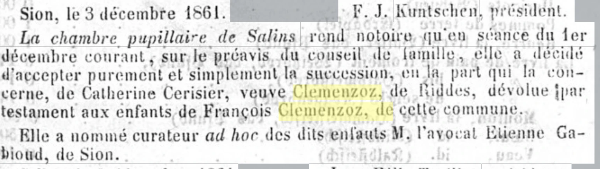
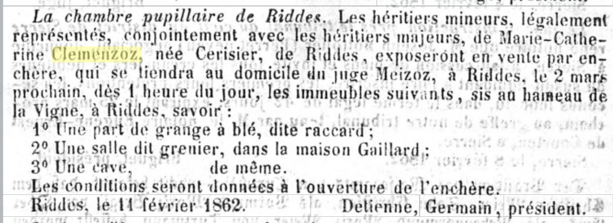
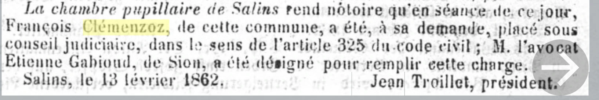
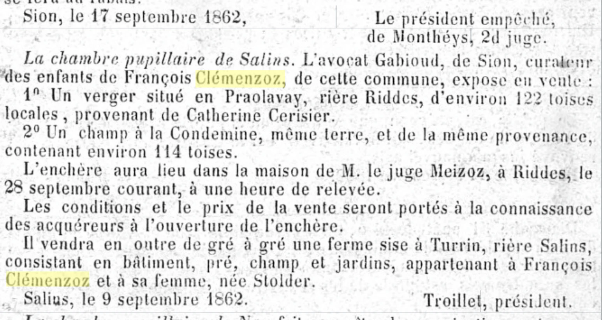
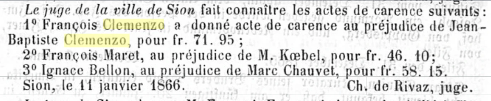

Il y a des histoires de famille qui se transmettent, et d'autres qui restent enfouies dans les petites lignes des journaux. Celle-ci est de la seconde sorte. Entre décembre 1861 et janvier 1866, la Gazette du Valais —le journal qui publiait les avis judiciaires du canton— a inscrit cinq fois le nom de Clemenzoz. Lus dans l'ordre, ces cinq avis racontent une seule histoire : la désagrégation du patrimoine de François Clemenzoz (1809–v. 1873), le père du Francisco qui, des années plus tard, émigrerait en Argentine.
Les avis sont apparus en cherchant le patronyme sur e-newspaperarchives.ch, la bibliothèque numérique de la presse historique suisse. Ce sont des textes brefs, bureaucratiques, sans une once de drame voulu. Et c'est précisément pour cela qu'ils frappent : personne ne raconte une tragédie, on ne fait que publier des édits. La tragédie se compose toute seule lorsqu'on les met bout à bout.
Les protagonistes, pour qui arrive sans contexte : Jean Joseph Clemenzo et Catherine Cerisier, un couple de Riddes, ont eu six enfants. L'un d'eux, François, a épousé Marie Louise Stalder et s'est établi à Salins, un village de montagne au-dessus de Sion. Parmi leurs enfants se trouvait Francisco (né en 1858), l'arrière-arrière-grand-père de l'auteur, qui émigra en Argentine en 1873, à quinze ans.
Premier avis — le testament qui saute une génération
Gazette du Valais, 8 décembre 1861.

La chambre pupillaire de Salins fait savoir que, dans sa séance du 1er décembre courant, sur le préavis du conseil de famille, elle a décidé d'accepter purement et simplement la succession, pour la part qui la concerne, de Catherine Cerisier, veuve Clemenzoz, de Riddes, dévolue par testament aux enfants de François Clemenzoz, de cette commune. Elle a nommé curateur ad hoc desdits enfants Me Etienne Gabioud, avocat à Sion.
Catherine Cerisier, la veuve de Jean Joseph, était morte. Et son testament fait une chose remarquable : il ne laisse pas ses biens à son fils François, mais saute une génération et les lègue directement aux petits-enfants — ils étaient alors trois : Josephine (18 ans), José (5) et Francisco (3).
Pourquoi une mère déshériterait-elle de fait son fils au profit des petits-enfants ? Le testament ne le dit pas, et il ne faut pas prêter des mots à une femme morte il y a plus de 160 ans. Mais le deuxième acte de cette histoire, dix semaines plus tard, rend la question difficile à éviter.
Comme les héritiers étaient mineurs, la chambre pupillaire de Salins —l'organe communal qui protégeait les intérêts des orphelins et des mineurs— leur nomma un curateur : Me Etienne Gabioud, avocat à Sion. Il convient de retenir ce nom, car il va revenir.
Deuxième avis — la vente aux enchères du hameau de la Vigne
Gazette du Valais, 16 février 1862.

Les héritiers mineurs, légalement représentés, conjointement avec les héritiers majeurs de Marie-Catherine Clemenzoz, née Cerisier, de Riddes, exposeront en vente aux enchères [...] les immeubles suivants, sis au hameau de la Vigne, à Riddes : 1° une part de grange à blé, dite raccard ; 2° une salle dite grenier, dans la maison Gaillard ; 3° une cave, de même.
La liquidation de la succession. Les « héritiers majeurs » sont les six enfants adultes de Catherine ; les « mineurs, légalement représentés » sont les petits-enfants du testament, avec Gabioud pour représentant.
L'inventaire mérite qu'on s'y arrête, car il dépeint la propriété rurale valaisanne du XIXe siècle : on ne vend pas une grange, mais une part d'un raccard (la grange de bois sur pilotis typique du Valais) ; non pas une maison, mais une salle à l'intérieur de la maison d'une autre famille, et une cave dans cette même maison d'autrui. Génération après génération, les partages successoraux avaient fragmenté la propriété au point qu'une famille pouvait posséder un quart de grange et une cave dans la maison du voisin. Ce morcellement extrême est l'une des clés économiques du Valais de l'époque, et l'un des moteurs de l'émigration.
Troisième avis — François demande sa propre mise sous conseil
Gazette du Valais, 23 février 1862.

La chambre pupillaire de Salins fait savoir que, dans sa séance de ce jour, François Clémenzoz, de cette commune, a été, à sa propre demande, placé sous conseil judiciaire, au sens de l'article 325 du code civil ; Me Etienne Gabioud, avocat à Sion, a été désigné pour remplir cette charge.
C'est le document central de la série. Le 13 février 1862 —dix semaines après la mort de sa mère, deux jours après l'annonce de la vente de la succession— François se présenta devant la chambre pupillaire de Salins et demanda à être placé sous conseil judiciaire : une curatelle d'assistance par laquelle il ne pouvait plus signer de contrats ni disposer de ses biens sans l'accord d'un conseiller. L'article 325 du code civil valaisan la prévoyait pour les prodigues et les mauvais administrateurs. Elle est moins sévère que l'interdiction totale, mais son effet est net : François perdait la maîtrise de ses affaires. Et le conseiller désigné fut ce même Gabioud qui veillait déjà sur l'héritage de ses enfants — tout le patrimoine familial passait sous le contrôle d'un seul avocat de Sion.
Ce que l'avis ne dit pas, c'est pourquoi. Des dettes ? L'alcool ? La maladie ? Une stratégie juridique pour se protéger des créanciers ? Une contrainte familiale déguisée en demande volontaire ? Les causes possibles sont nombreuses et la source n'en autorise aucune. La seule chose documentée, c'est la séquence : la mère lègue en sautant son fils, et le fils —quelques semaines plus tard— demande formellement qu'on administre sa vie à sa place.
Un détail humain, lui, bien documenté : douze jours après cette démarche naquit Etienne, son dernier enfant. Lorsque François se rendit à la chambre pupillaire pour céder le contrôle de ses biens, sa femme en était au dernier mois de sa grossesse.
Quatrième avis — on vend tout
Gazette du Valais, 21 septembre 1862.

Me Gabioud, avocat à Sion, curateur des enfants de François Clémenzoz, de cette commune, expose en vente : 1° un verger situé à Praolavay, rière Riddes, d'environ 122 toises locales, provenant de Catherine Cerisier ; 2° un champ à la Condemine, même terre, de même provenance, d'environ 114 toises. [...] Il vendra en outre, de gré à gré, une ferme sise à Turrin, rière Salins, comprenant bâtiment, pré, champ et jardins, appartenant à François Clémenzoz et à sa femme, née Stolder.
Sept mois après la mise sous conseil, Gabioud liquide en un seul avis deux patrimoines distincts :
- L'héritage des enfants : le verger de Praolavay et le champ de la Condemine, à Riddes, « provenant de Catherine Cerisier ». Les parcelles étaient petites — 122 et 114 toises locales, de l'ordre de quelques centaines de mètres carrés chacune. La grand-mère avait voulu que ces biens parviennent à ses petits-enfants ; ceux-ci les ont eus neuf mois.
- La ferme familiale : à Turrin, un hameau de Salins. Bâtiment, pré, champ et jardins — une exploitation complète, le foyer de la famille. L'avis la décrit comme appartenant « à François Clémenzoz et à sa femme, née Stolder » : c'était un bien du couple, et au passage cet avis est la première source primaire qui confirme le patronyme de Marie Louise Stalder.
Pour la recherche généalogique, cette dernière phrase vaut de l'or. Pour l'histoire familiale, c'est le point de non-retour : après septembre 1862, la famille de François n'avait plus de ferme à elle.
Cinquième avis — 71 francs 95
Gazette du Valais, 14 janvier 1866.

Le juge de la ville de Sion fait connaître les actes de carence suivants : 1° François Clemenzo a donné acte de carence au préjudice de Jean-Baptiste Clemenzo, pour fr. 71,95 [...]
Quatre ans plus tard, l'épilogue. Un « acte de carence » certifie qu'une saisie a échoué : on a cherché des biens pour recouvrer une dette et l'on n'a rien trouvé de saisissable. La formule de l'avis est ambiguë sur qui devait à qui — la lecture la plus cohérente avec tout ce qui précède est que François était le débiteur insolvable, même s'il reste à confirmer l'usage de l'époque. Quoi qu'il en soit, le montant parle de lui-même : le litige porte sur 71 francs et 95 centimes. De la ferme avec pré, champ et jardins à une saisie infructueuse pour le prix de quelques semaines de journée de travail.
L'autre nom de l'avis appartient aussi à la famille : Jean-Baptiste Clemenzo. Un Jean-Baptiste frère de Jean Joseph —et donc oncle de François— est documenté dans les recensements du début du siècle, mais en 1866 il aurait eu plus de 90 ans ; il s'agit donc peut-être d'un descendant homonyme de cette branche. Si c'est le cas, l'ironie est notable : les deux branches de la famille qui se retrouvent aujourd'hui grâce à la généalogie se sont croisées pour la dernière fois devant un tribunal, pour 72 francs.
La géographie de la ruine
Les cinq avis dessinent une carte. Tous les points tiennent dans une vingtaine de kilomètres de la vallée du Rhône et de ses coteaux :
| Lieu | Ce que c'est | Ce qui s'y est passé |
|---|---|---|
| Riddes (~480 m, plaine) | Commune d'origine de Catherine Cerisier | Ses immeubles : le hameau de la Vigne (raccard, salle, cave), le verger de Praolavay, le champ de la Condemine |
| Salins (~1 000 m, montagne au-dessus de Sion) | Commune de François et des Stalder | La chambre pupillaire qui a tout instruit ; la ferme familiale au hameau de Turrin |
| Ardon (~500 m, plaine) | Bourgeoisie ancestrale des Clemenzo ; François y naquit en 1809 | Le point de départ de la famille |
| Sion (~500 m, chef-lieu) | Siège de l'avocat Gabioud et du juge de l'acte de carence | Là où tout fut administré et liquidé |
La famille vivait répartie entre deux étages du paysage : les biens hérités des Cerisier étaient en bas, dans la plaine de Riddes ; la vie quotidienne et la ferme étaient en haut, à Salins. Riddes et Salins sont distants d'environ 16 kilomètres et de 500 mètres de dénivelé — deux mondes que le mariage de Jean Joseph (de la mouvance d'Ardon/Riddes) avec les biens de Salins avait reliés. Que la ferme de Turrin ait été un bien du couple François–Stalder, et que les Stalder aient été une famille établie de Salins, laisse penser que cette ferme a pu venir du côté de l'épouse — mais ceci est une hypothèse, non un fait.
Le Valais de 1860, ou pourquoi ce n'est pas (seulement) une histoire personnelle
Il serait facile de lire ces avis comme le portrait d'un homme qui a échoué. Mieux vaut résister à la tentation, car le contexte était brutal :
- Le morcellement héréditaire. Le partage égalitaire entre héritiers, répété pendant des générations sur un territoire de montagne, avait pulvérisé la propriété. La « part de raccard » de la vente de 1862 n'est pas une anecdote : c'est le système. Des parcelles de 100 toises ne nourrissaient pas une famille.
- Le fleuve. La plaine du Rhône —où se trouvaient les biens de Riddes— était une zone de marais et d'inondations récurrentes. La grande crue de septembre 1860 dévasta la vallée quelques mois avant le premier avis de cette série ; la correction systématique du Rhône ne commença qu'en 1863.
- L'émigration avait déjà commencé. La colonie de San José, en Entre Ríos, avait été fondée en 1857 — en bonne partie par des Valaisans. Quand François cédait sa ferme, des voisins d'Ardon et de Riddes écrivaient déjà des lettres depuis l'Argentine. La soupape était ouverte, et connue.
Dans ce cadre, l'insolvabilité d'un paysan de Salins avec six bouches à nourrir n'a pas besoin d'explications extraordinaires. Les causes possibles —mauvaises récoltes, dettes héritées, mauvaise gestion, santé, le fleuve— sont trop nombreuses pour en choisir une sans preuve. Ce que les avis documentent, ce n'est pas le pourquoi, mais le résultat.
Épilogue : ce qui est resté
| Année | Fait |
|---|---|
| 1851–1861 | Mort de Catherine Cerisier ; son testament tente de protéger les petits-enfants |
| 1862 | Conseil judiciaire pour François ; vente de la succession et de la ferme de Turrin |
| 1866 | Acte de carence pour 71,95 francs |
| ~1871–1874 | Mort de François ; en janvier 1874, un tuteur vend la dernière terre des orphelins, à Chassoure |
| 1873 | Francisco, à 15 ans, figure au registre des émigrés à destination de « Argentine, Bs. As. » |
| 1905 | Le tribunal de Conthey liquide les derniers biens à Riddes et fait parvenir à Buenos Aires, via le Consulat de Suisse, 829,25 francs pour Francisco et 200,75 pour son frère Etienne |
Francisco a émigré sans patrimoine : tout ce que sa grand-mère avait tenté de préserver pour lui avait été vendu alors qu'il avait quatre ans. Mais le lien avec le Valais ne s'est pas tout à fait rompu — quarante-trois ans après la mort de Catherine, les derniers francs de cette histoire ont traversé l'Atlantique par un virement consulaire. Francisco était alors un charpentier d'Entre Ríos avec des enfants argentins, et la ferme de Turrin, le raccard de la Vigne et les 71,95 francs étaient exactement ce qu'ils sont aujourd'hui : des petites lignes dans un vieux journal, attendant que quelqu'un les lise.
Sources
- Gazette du Valais, vol. 7 n° 98 (8-12-1861) ; vol. 8 n° 14 (16-02-1862), n° 16 (23-02-1862), n° 76 (21-09-1862) ; vol. 12 n° 4 (14-01-1866). Numérisées sur e-newspaperarchives.ch.
- Recensements du Valais 1829–1880 (recensements.vallesiana.ch) et arbre généalogique du site — fiches de François p36, Catherine Cerisier p58 et Francisco p26.
- Lettre du Tribunal de Conthey, 4-02-1905 (archives familiales).
- Transcriptions complètes et analyse documentaire dans la fiche de recherche
gazette-valais-1861-1866.md.